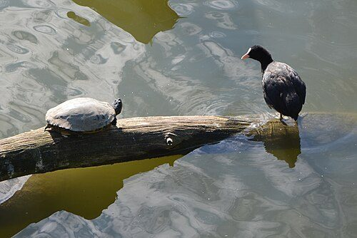

Cuidar el cerebro cada día
Ejercicio, sueño, alimentación, tensión arterial, oído, alcohol y tabaco, pantallas, cascos y estrés: lo que de verdad protege el cerebro y lo que es un mito.
Prevenir
 Prevenir
PrevenirLos 14 factores de riesgo de demencia que se pueden cambiar
Según la comisión de The Lancet de 2024, casi la mitad de los casos de demencia podría prevenirse o retrasarse actuando sobre 14 factores a lo largo de la vida. Cuáles son y qué hacer con cada uno.
Leer → Prevenir
PrevenirTensión arterial y cerebro
La hipertensión es el principal factor de riesgo de ictus y uno de los más importantes de demencia. Controlarla es la medida que más protege el cerebro. Cifras, mediciones en casa y objetivos.
Leer → Prevenir
PrevenirAlcohol, tabaco y drogas
Cómo afectan al cerebro el alcohol (no hay una dosis segura), el tabaco, el cannabis y otras drogas. Ictus, demencia, convulsiones y daño en el cerebro en desarrollo.
Leer → Prevenir
PrevenirOído y vista
La pérdida de audición en la mediana edad es el factor de riesgo de demencia modificable con más peso, y la pérdida de visión no tratada también cuenta. Los audífonos y la cirugía de cataratas protegen el cerebro.
Leer → Prevenir
PrevenirProteger la cabeza
Cascos, cinturones, sillas infantiles y prevención de caídas: medidas sencillas que evitan miles de traumatismos craneales cada año. Y qué hacer con los golpes en el deporte.
Leer →Hábitos
 Hábitos
HábitosEjercicio físico y cerebro
Moverse es probablemente lo mejor que se puede hacer por el cerebro: mejora el riego, estimula la formación de conexiones, reduce el riesgo de ictus y demencia y mejora el ánimo y el sueño.
Leer → Hábitos
HábitosAlimentación y cerebro
No hay superalimentos para el cerebro, pero sí patrones de alimentación que lo protegen, como la dieta mediterránea. Qué dice la evidencia sobre suplementos, omega-3 y vitaminas.
Leer → Hábitos
HábitosDormir bien
Consejos prácticos y basados en la evidencia para dormir mejor: horarios, luz, pantallas, cafeína, alcohol, siestas y qué hacer si no consigues dormirte.
Leer → Hábitos
HábitosReserva cognitiva
Por qué dos personas con el mismo daño cerebral pueden tener síntomas muy distintos. La educación, el trabajo estimulante, la lectura, los idiomas, la música y la vida social construyen reserva.
Leer → Hábitos
HábitosPantallas y cerebro
Qué sabemos y qué no sobre el efecto de móviles, tabletas y redes sociales en el cerebro de niños, adolescentes y adultos. Recomendaciones sensatas sin alarmismo.
Leer →
HábitosEstrés y cerebro
El estrés agudo nos prepara para actuar; el crónico desgasta el hipocampo y la corteza prefrontal, altera el sueño y aumenta el riesgo vascular. Qué ocurre en el cerebro y qué ayuda.
Leer →